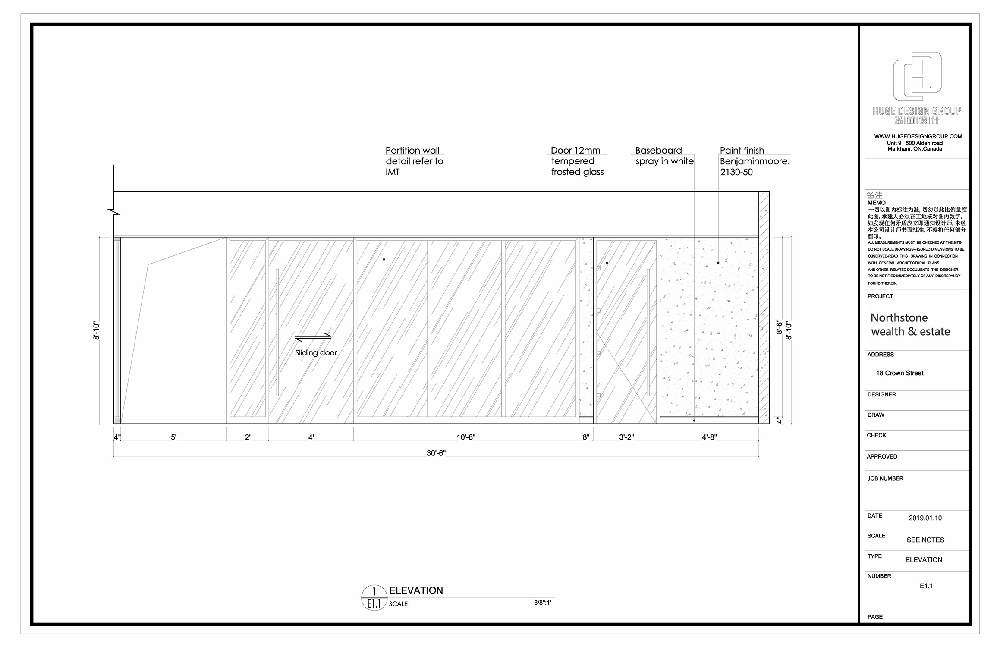
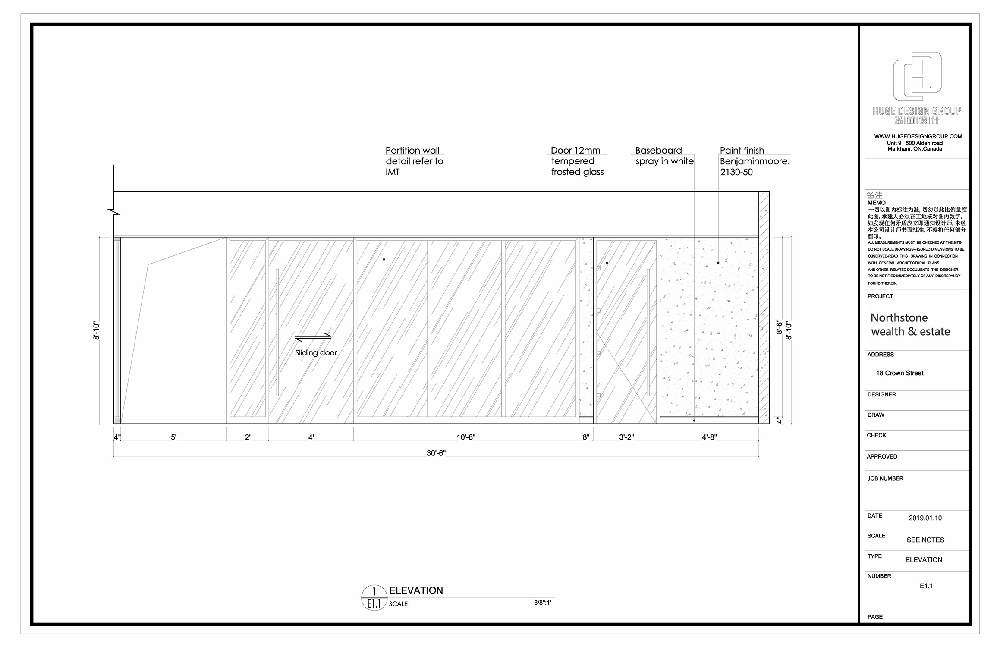
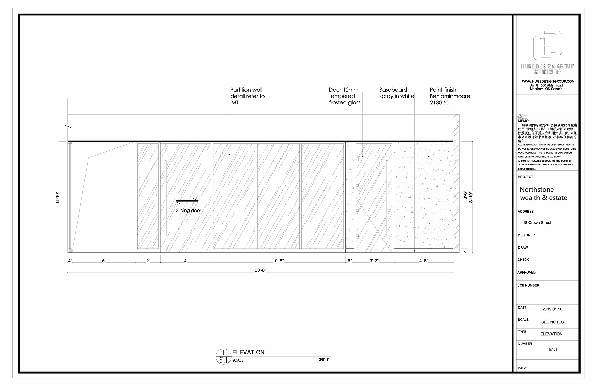

焕然一新的Office设计， A bold and refreshing office working environment
 

施工前现场图，The Existing Condition, a traditional classic office layout
This is one office project that I have been involved at Huge Design Group in my free times. We choose to integrate a lot of wood and glass into this project to augment users comfort and increase the transparency in the office. Difference then the traditional cubicle office planning, we are trying to bring the cottage feel into the office by using the wood floor finish with carpet. The transparency brought by the curtain wall brings coworkers together with more interactivities. The blue wave graphic on the white fins made itself the feature wall of the space with more fun and dynamics.
这是我在空闲时间去弘诚设计实习的项目，在项目中大量的使用木纹和玻璃，增加Office空间内的舒适性和透明度，一反Cubicule传统Office死板的布局。通透的玻璃可以很好的引导自然光到室内同时拉近同事之间的互动。木质的家具，地面和地毯 使工作环境有了一份家里温馨的归属感。简单的蓝色波纹Graphic复合白色的百叶矩阵背景墙为整个空间增添了一份动感与趣味性。
焕然一新的Office设计， A bold and refreshing office working environment

施工前现场图，The Existing Condition, a traditional classic office layout